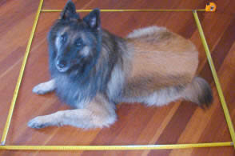
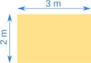
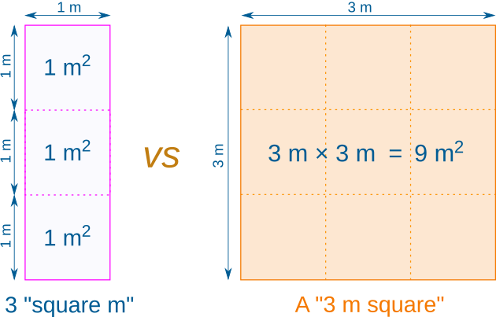
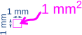
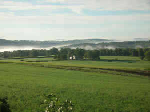

Metric Area
These are the most common measurements of area (from smallest to largest):
- Square Millimeter
- Square Centimeter
- Square Meter
- Hectare
- Square Kilometer

Ariel the Dog is waiting patiently
inside 1 square meter.
Square Meter
The square meter is the basic unit of area of the Metric System.
Area is length by length, so:
A square that is 1 meter on each side
is 1 square meter.
You could have other shapes (such as a rectangle that is ½ a meter by 2 meters) that also make 1 square meter.
Example: How big is this rectangle?

It is 3 meters by 2 meters, so it is 3 m × 2 m = 6 m2 (6 square meters)
Square Meter vs Meter Square
Be careful to say "square meters" not "meters squared":

Square Millimeter

A square millimeter is millimeters × millimeters, which is written mm2.
A millimeter is one-thousandth of a meter (11000 meter), so a square millimeter is also:
11000 × 11000 = 11,000,000 of a square meter
In other words a square millimeter is one-millionth of a square meter.
So a square meter has 1,000,000 square millimeters.
Square Centimeter

A square centimeter is centimeter × centimeter.
It is written cm2
A centimeter is one-hundredth of a meter (1100 meter), so a square centimeter is also:
1100 × 1100 = 110,000 of a square meter
In other words a square centimeter is one-ten-thousandth of a square meter.
So a square meter has 10,000 square centimeters.

Hectare
A hectare (ha) is an area equal to a square that is 100 meters on each side.
So a hectare has 100 m × 100 m = 10,000 m2 (square meters).
Hectares are commonly used to measure land.
Square Kilometer
A square kilometer is kilometer × kilometer, which is written km2.
A kilometer is a thousand meters, so a square kilometer is also:
1,000 m × 1,000 m = 1,000,000 m2 (square meters)
In other words a square kilometer is one-million square meters.
Square kilometers are commonly used to measure large areas of land.
Some Examples
A square meter is:
- the area of an A0 sheet of paper (or 16 sheets of A4 paper)
- about the area covered by an open large umbrella
- about half the area of a doorway
A hectare is:
- about two "football fields"
- about two and a half acres
- 2.471 acres (to 3 decimal places)
- about 100,000 square feet
- 107,639 square feet (to the square foot)
- about 12,000 square yards
- 11,960 square yards (to the square yard)
Public parks are often a few hectares in size, find one in your area and measure it. You can do that by pacing it out, or use a map.